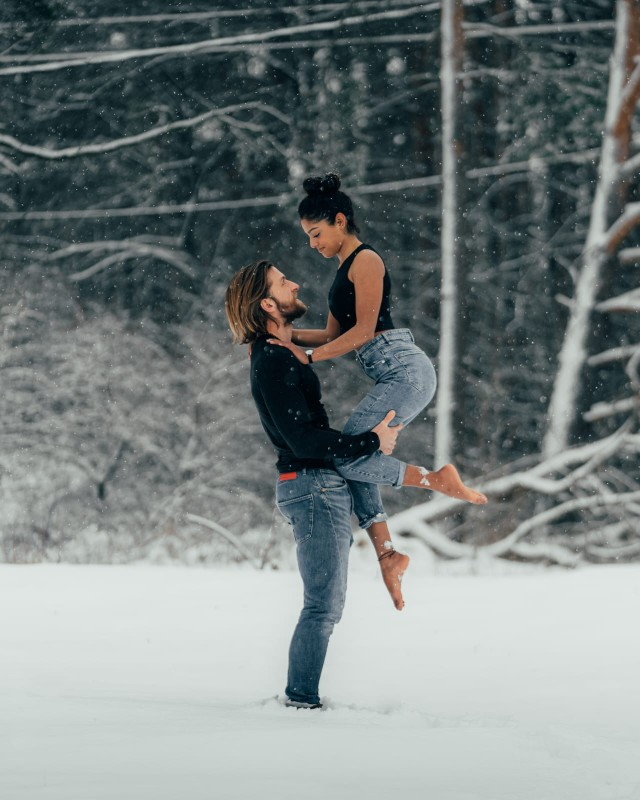
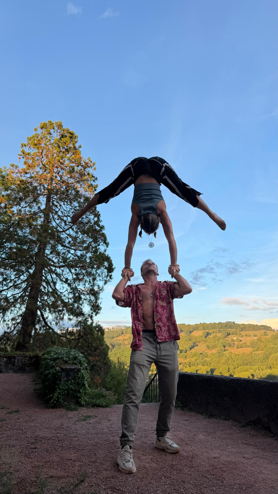
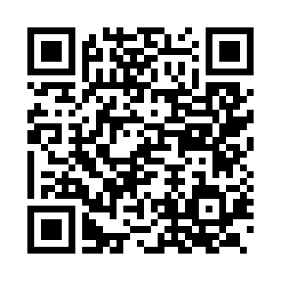

Cours réguliers
Un cycle progressif pour construire les bases, enrichir le vocabulaire et gagner en autonomie.
Cours, stages et ateliers pour explorer l'acrobatie à deux, développer ses appuis et construire une véritable relation de partenaire.

Chaque séance cherche l'équilibre entre précision technique, sécurité, écoute et recherche artistique. L'objectif : apprendre à donner, recevoir et transformer les informations du partenaire pour créer ensemble.

Un cycle progressif pour construire les bases, enrichir le vocabulaire et gagner en autonomie.
Une immersion sur une ou plusieurs journées autour d'un thème, d'un niveau ou d'une recherche.
Un format ponctuel pour faire découvrir les portés et explorer la relation partenaire.
Échauffement, placements et compréhension des appuis.
Des figures construites par étapes, selon les possibilités de chacun.
Communication, confiance et attention aux sensations du partenaire.
Improvisation, variations et composition à deux ou en groupe.
Je propose des cours, stages et ateliers de portés acrobatiques adaptés à votre public, à vos espaces et à votre calendrier.

Scannez pour découvrir l'univers et les actualités.